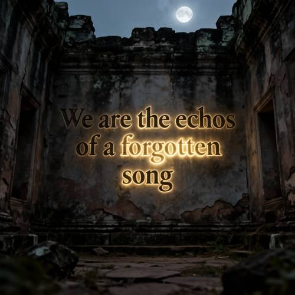
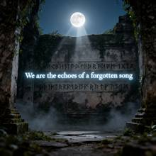

Text Generation — A forgotten ancient temple has a mysterious English inscription "We ar
A forgotten ancient temple has a mysterious English inscription "We are the echoes of a forgotten song" engraved on the wall, which glows in the moonlight.

Direct — one call, no iterationContinuum — Qwen3.8-27B + FLUX.2-dev
Judge — Direct
FAILText Generation — The image displays text on a stone wall that reads, 'We are the echos of a forgotten song'. The prompt specified the text 'We are the echoes of a forgotten song'. The word 'echoes' is misspelled as 'echos' in the generated image.
PASSGrammar - Pronoun Reference — The prompt states that the inscription glows ('...inscription...which glows...'). In the image, the text itself is clearly depicted with a bright, warm-toned glow, appearing as the source of light. This visually represents the inscription as the object that is glowing.
Judge — Continuum
PASSText Generation — The image displays text on a stone wall. The glowing text reads, "We are the echoes of a forgotten song". This matches the text specified in the prompt exactly, with no omissions, additions, or spelling errors.
PASSGrammar - Pronoun Reference — The prompt specifies that the inscription 'which glows in the moonlight'. The pronoun 'which' refers to the inscription. In the image, the inscription "We are the echoes of a forgotten song" is clearly depicted as glowing with a bluish-white light, correctly representing the action described by the relative clause.
What the agent did
Thinking
The user is asking for an image of a forgotten ancient temple with the English inscription "We are the echoes of a forgotten song" glowing on the wall in moonlight. First let me generate the image with flux2-dev. The prompt should be visual details: an ancient forgotten temple, moonlit night, a wall with a glowing English inscription engraved. Since the prompt asks for rendered text, I must verify the text with inspect_region and edit any misspellings. Let me generate first.
Step 1 — `generate_image`
{
"prompt": "A forgotten ancient temple at night, weathered stone walls covered in vines and moss, moonlight streaming from a bright full moon, mystical atmosphere. On the main stone wall there is a long horizontal English inscription engraved in an ancient rune-like but clearly Latin alphabet, glowing with a soft ethereal blue-white light: \"We are the echoes of a forgotten song\" \u2014 the glowing engraved text is legible and clearly readable, carved in a row across the wall. Cinematic, dramatic moonlight, mist, atmospheric, highly detailed.",
"width": 1024,
"height": 1024,
"model": "flux2-dev"
}
Result img_0

Thinking
The image looks good. Let me inspect the text region to check whether the inscription is correctly spelled. The text reads "We are the echoes of a forgotten song" — but I need to verify the spelling of each character. Let me zoom in.
Model
The first generation looks promising. Let me zoom in to verify the inscription text character by character.
The text reads "We are the echoes of a forgotten song" — checking each word: - "We" ✓ - "are" ✓ - "the" ✓ - "echoes" ✓ - "of" ✓ - "a" ✓ - "forgotten" ✓ - "song" ✓ The text is correct and fully legible. The scene shows an ancient, long-forgotten temple, the full moon, glowing inscriptions, mist, and vines — all matching the prompt. One point: the prompt says the inscription is "engraved on the wall." In the image, the glowing text appears somewhat floating/illuminated, and above and below it there are rows of what look like runes. The text appears to be engraved and glowing — that's fine. The rows of runic characters above and below could be interpreted as additional ancient carvings, which adds atmosphere. The glowing English inscription is the focal point and is legible. This is a good result. Mark it as the best. Actually, let me consider whether there's anything that should be improved. The prompt says the inscription "glows in the moonlight" — in the image the text glows in blue-white, which could be said to be due to the moonlight. No problem. Everything in the prompt is present: - Forgotten ancient temple ✓ - Mysterious English inscription ✓ - "We are the echoes of a forgotten song" ✓ (verified) - Engraved on the wall ✓ (looks carved with a glow) - Glows in the moonlight ✓ I'm satisfied with this. I'll mark it as the best and stop.
Model
The text can be clearly read as "We are the echoes of a forgotten song", and each word has been verified: "We", "are", "the", "echoes", "of", "a", "forgotten", "song". The scene contains everything the prompt requested — a forgotten ancient temple, moonlight, glowing inscriptions carved on the wall, mist, and overgrown ruins. This matches the prompt.
Step 3 — `mark_best`
{
"image": "img_0",
"reason": "Temple scene with moonlight and mist matches the prompt, and the inscription \"We are the echoes of a forgotten song\" is engraved, glowing, and verified letter-by-letter to be correctly spelled and legible."
}
Thinking
The mark has been set. All the elements of the prompt are in place, and the text has been verified too. I'll stop here and let the user know.
Model
The image is complete. It depicts a forgotten ancient temple at night — weathered stone walls draped in vines and moss, a bright full moon beaming down through the ruins, mist pooling on the flagstones — with the inscription "We are the echoes of a forgotten song" engraved across the main wall, glowing in a soft blue-white moonlight. I zoomed in and verified the inscription character by character, and it's spelled correctly and fully legible. The result is marked as the best.